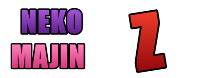
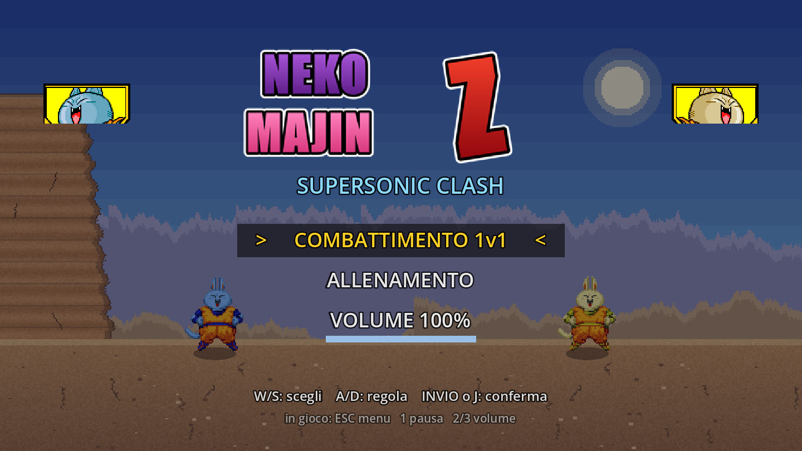
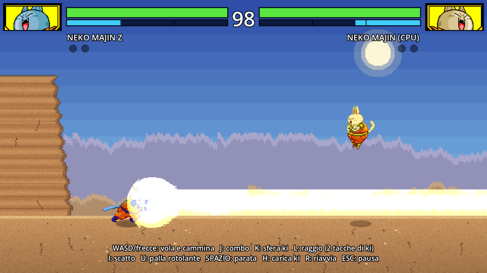
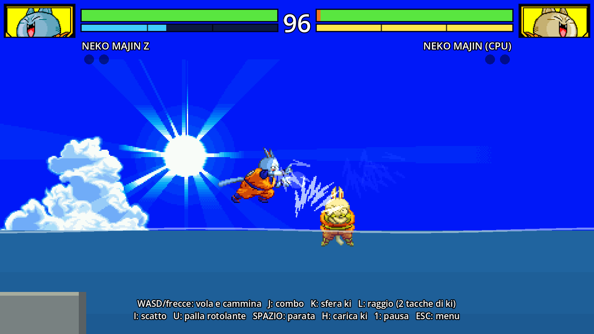
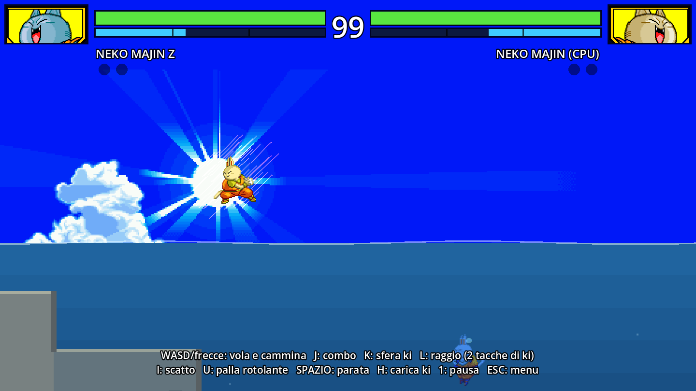

SUPERSONIC CLASH
Picchiaduro 2D fan-made in stile Dragon Ball FighterZ / Supersonic Warriors 2 ,
realizzato con Godot. Volo libero, combo, raggi energetici, un lago in cui immergersi
per sparire dai sensori del nemico… e un gatto majin molto arrabbiato.
⬇ Scarica per Windows
Ultima versione — zip con eseguibile singolo (~35 MB), Windows 10/11 a 64 bit.NekoMajinZ.exe: non serve installare nulla.
Screenshot

Menù: 1v1 contro la CPU, allenamento e volume regolabile

Raggio energetico a tutto schermo nel Deserto Roccioso

Lago della Costa: la riva scende a gradoni nell'acqua

Sott'acqua sei invisibile: la CPU ti perde e ti cerca
Caratteristiche
Volo libero in tutta l'arena, stile Supersonic Warriors 2
Combo corpo a corpo, sfere di ki a ricerca, scatto homing e raggio energetico
Online 1v1 in P2P (WebRTC): sfida un amico scambiando due codici, senza server
Fuga dalle combo: tieni premuto J per liberarti con uno scoppio di ki
Due mappe: Deserto Roccioso e Lago della Costa
Stealth acquatico: immergiti e sparisci dai sensori del nemico (ma le sfere di ki che escono dall'acqua ti tradiscono!)
Fisica dei liquidi: splash, bolle, attrito e galleggiamento
Modalità Allenamento con rigenerazione di HP e ki
CPU che vola, para, schiva i raggi e ti dà la caccia
Hitstop, slow-motion sul KO e camera dinamica
Supporto gamepad completo
Comandi principali
WASD / frecce Movimento e volo libero (giù per immergerti nel lago) J Combo corpo a corpo (J, J, J) — tienilo premuto mentre subisci una combo per la fuga K Sfera di ki L Raggio energetico (2 tacche di ki) I / U Scatto homing / palla rotolante SPAZIO / H Parata / carica ki 1 / ESC Pausa / torna al menù 2 / 3 Volume giù / su
Progetto fan-made senza scopo di lucro. Sprite di Neko Majin Z da
Dragon Ball Z: Supersonic Warriors 2 (DS) — tutti i diritti sui personaggi
appartengono ai rispettivi proprietari.GitHub .